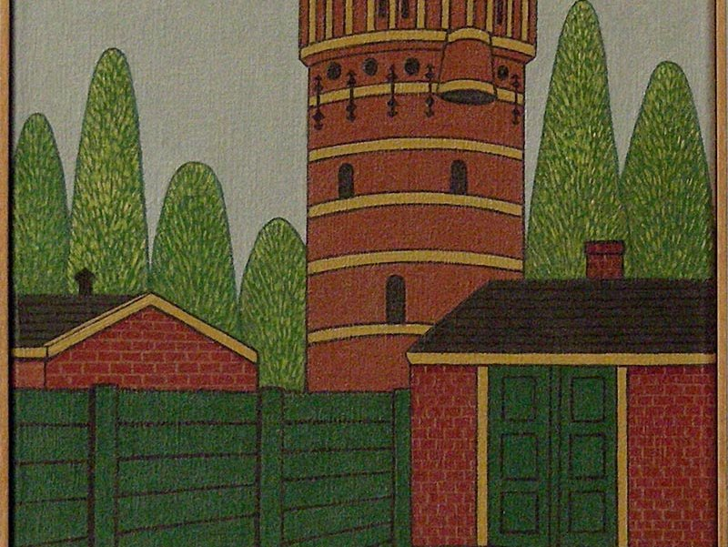

7. Watertoren Hoog en Droog

De watertoren “Hoog & Droog” werd in 1890 gebouwd op een hoge plek aan de Hogelandsingel. De toren was onderdeel van het nieuwe waterleidingnet dat Enschede eindelijk schoon drinkwater gaf, een grote stap vooruit voor de gezondheid van de stad. Architect N. Biezeveld ontwierp de toren in een klassieke stijl met neogotische details. Het is zijn hoogste watertoren en inmiddels een gemeentelijk monument. In de toren hangt een groot ijzeren waterreservoir van driehonderd kubieke meter, bijna veertig meter boven de grond. Door die hoogte kon het water vanzelf met genoeg druk door de leidingen stromen. In 1955 werd de houten bovenbouw vervangen door een bakstenen afdekking, en een jaar later raakte de toren buiten gebruik. Sinds 2017 is het gebouw in handen van ingenieursbureau CLAFIS en vormt het een herkenbaar onderdeel van het wijkpark. Bernink schildert de toren met strakke lijnen en heldere kleurvlakken. Hij benadrukt de rustige, krachtige vormen en de ritmiek van het metselwerk. Voor hem is de watertoren meer dan een technisch bouwwerk: het is een symbool van zorg voor de stad en van Enschede’s industriële verleden. In zijn schilderij krijgt dit utilitaire gebouw een stille waardigheid die nog altijd voelbaar is.